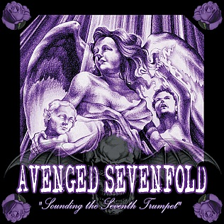
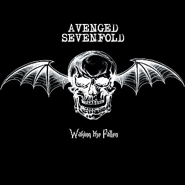
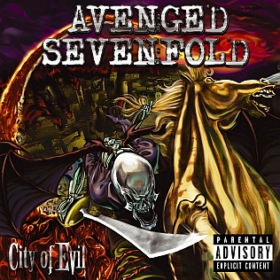
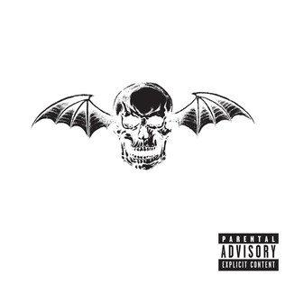
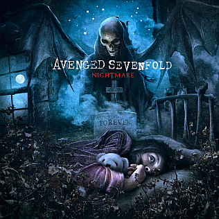
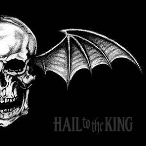
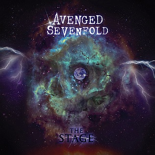
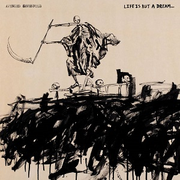

Studio Albums
Here is a list of every full-length album released by Avenged Sevenfold in order of release:

Genre: Metalcore
Their debut album. It has a lot of screaming and punk energy.
Best Songs: Shattered by Broken Dreams, Warmness on the Soul

Genre: Metalcore
The album that made them famous in the underground metal scene.
Best Songs: Unholy Confessions, Chapter Four, Second Heartbeat

Genre: Heavy Metal / Hard Rock
Their major label breakthrough with clean vocals and guitar harmonies.
Best Songs: Bat Country, Beast and the Harlot, Seize the Day

Genre: Hard Rock / Heavy Metal
Also called the White Album. Self-produced and very experimental.
Best Songs: Almost Easy, Afterlife, A Little Piece of Heaven

Genre: Heavy Metal
Dedicated to The Rev after he passed away. Reached #1 on Billboard.
Best Songs: Nightmare, So Far Away, Buried Alive

Genre: Classic Heavy Metal
Inspired by 80s bands like Metallica, Iron Maiden, and Megadeth.
Best Songs: Hail to the King, Shepherd of Fire

Genre: Progressive Metal
A concept album about space, artificial intelligence, and the future.
Best Songs: The Stage, God Damn, Paradigm

Genre: Avant-Garde Metal
Their latest album with philosophical themes and weird experimental sounds.
Best Songs: Nobody, Cosmic, Mattel